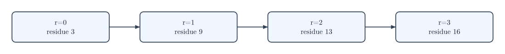
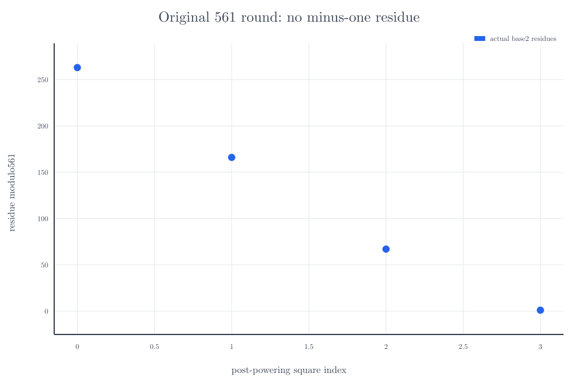
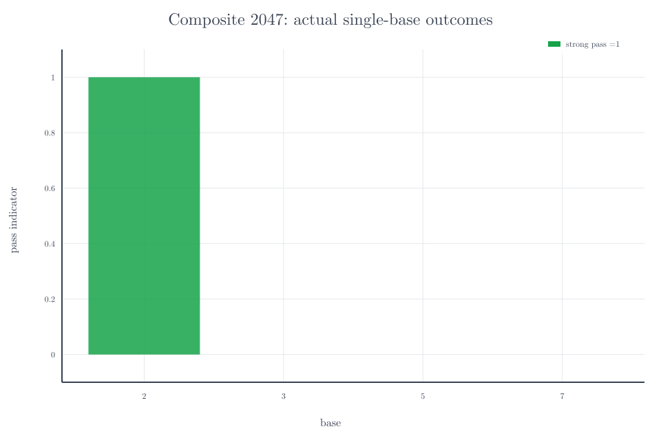
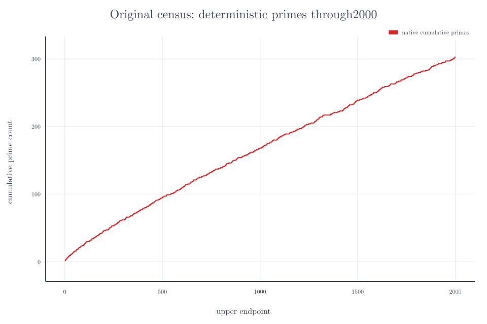

Miller–Rabin primality
Abstract
Given an unsigned integer, decide whether its only positive divisors are one and itself. We derive the strong probable-prime condition, show actual residues for small primes and composites, expose a single-base pseudoprime, and retain the original Carmichael examples and prime census. Twelve fixed bases suffice for this API’s entire64-bit domain; one passing round alone does not prove primality.
Why repeated squares reveal composites
For odd n greater than2, factor n−1=d times2 to power s, with d odd. If n is prime and a is not divisible by n, Fermat gives a to power(n−1) congruent to1. Modulo a prime, the equation x squared=1 has only the two roots1 and−1: the prime must divide one of the factors(x−1)(x+1). Therefore the sequence starting at a to power d either starts at1, or encounters−1 before its first1. Failure proves compositeness.
The converse fails for one base. A composite satisfying this condition is a strong pseudoprime to that base. The code keeps the original scheduling: after an unsuccessful initial residue it performs up to s−1 squares, stopping on−1; it does not stop early on a later1. Every value below is observed inside the canonical producer. Shared exact modular products use complete unsigned128-bit intermediates.
A small prime, from its actual states
For n=17 and base3, d=1 and s=4. The actual residues3,9,13,16 reach−1. The arrows show actual scheduled squares, with the successful endpoint taken directly from the trace. Passing is necessary for a prime; its meaning for a composite depends on the chosen base.
#include <dm/dm.hpp>
int main() {
std::filesystem::create_directories("build");
auto t = dm::algorithms::miller_rabin_round_trace(17, 3);
dm::graphics::Diagram d;
std::print("Actual d={}, s={}, pass={}.\n\n| r | actual residue |\n| ---: | ---: |\n",
t.d, t.s, t.passed);
for (std::size_t r = 0; r < t.residues.size(); ++r) {
std::print("| {} | {} |\n", r, t.residues[r]);
auto id = std::to_string(r);
d.node(id, {5.0 * r, 0},
std::format("r={}\nresidue {}", r, t.residues[r]));
if (r)
d.edge(std::to_string(r - 1), id);
}
d.save_svg("build/miller_tiny.svg");
}Actual d=1, s=4, pass=true.
| r | actual residue |
|---|---|
| 0 | 3 |
| 1 | 9 |
| 2 | 13 |
| 3 | 16 |

Retain the original worked rounds and Carmichael controls
The original prime13 passes base2 with residues8,12. Composite15 fails with residue8. Composite561 has d=35 and s=4; base2 produces263,166,67,1 without encountering560. In particular67 is a nontrivial square root of1 modulo561, impossible modulo a prime. Its Fermat residue is nevertheless1. The original1105 and1729 are also composite; Fermat passes shown here are numerical observations for base2.
#include <dm/dm.hpp>
int main() {
std::filesystem::create_directories("build");
auto p = dm::graphics::RPlot::create();
std::vector<double> x, y;
std::print("| candidate | d | s | base2 strong pass | deterministic prime | base2 Fermat residue | " "actual strong residues |\n| ---: | ---: | ---: | --- | --- | ---: | --- |\n");
for (std::uint64_t n : {13ULL, 15ULL, 561ULL, 1105ULL, 1729ULL}) {
auto t = dm::algorithms::miller_rabin_round_trace(n, 2);
std::print("| {} | {} | {} | {} | {} | {} |", n, t.d, t.s, t.passed,
dm::algorithms::is_probable_prime(n),
dm::algorithms::mod_pow(2, n - 1, n));
for (auto v : t.residues)
std::print(" {}", v);
std::print(" |\n");
if (n == 561)
for (std::size_t r = 0; r < t.residues.size(); ++r) {
x.push_back(r);
y.push_back(t.residues[r]);
}
}
p.points(x, y, "actual base2 residues", {37, 99, 235}, 6).title(
"Original 561 round: no minus-one residue").x_label(
"post-powering square index").y_label("residue modulo561").save_svg(
"build/miller_original.svg");
}| candidate | d | s | base2 strong pass | deterministic prime | base2 Fermat residue | actual strong residues |
|---|---|---|---|---|---|---|
| 13 | 3 | 2 | true | true | 1 | 8 12 |
| 15 | 7 | 1 | false | false | 4 | 8 |
| 561 | 35 | 4 | false | false | 1 | 263 166 67 1 |
| 1105 | 69 | 4 | false | false | 1 | 967 259 781 1 |
| 1729 | 27 | 6 | false | false | 1 | 645 1065 1 1 1 1 |

A passing base is not a certificate
The number2047=23 times89 is composite. Base2 passes its strong round, while base3 rejects it. The ordinary primality function first screens division by2,3,5,7,11,13,17,19,23,29,31,37, then performs the same twelve strong rounds if needed. It may reject2047 at trial division by23; the explicit base traces below are separate pedagogical observations, not a fabricated history of that screened call.
Sorenson and Webster establish the smallest simultaneous strong pseudoprime to the first twelve prime bases as318665857834031151167461. This exceeds18446744073709551615, so the fixed set decides primality throughout the unsigned64-bit domain. This corrects the legacy report's larger, incorrectly attributed bound. No probability-of-error model is needed for this finite-domain API. Outside that domain the conclusion does not follow.
#include <dm/dm.hpp>
int main() {
std::filesystem::create_directories("build");
std::vector<double> passes;
std::vector<std::string> labels;
std::print("| base | actual strong pass for2047 | initial residue |\n| ---: | --- | ---: |\n");
for (std::uint64_t a : {2ULL, 3ULL, 5ULL, 7ULL}) {
auto t = dm::algorithms::miller_rabin_round_trace(2047, a);
passes.push_back(t.passed ? 1 : 0);
labels.push_back(std::to_string(a));
std::print("| {} | {} | {} |\n", a, t.passed, t.residues.front());
}
auto p = dm::graphics::RPlot::barplot(passes, labels, "strong pass =1");
p.title("Composite 2047: actual single-base outcomes").x_label("base").y_label("pass indicator").save_svg("build/miller_liar.svg");
}| base | actual strong pass for2047 | initial residue |
|---|---|---|
| 2 | true | 1 |
| 3 | false | 1565 |
| 5 | false | 1034 |
| 7 | false | 942 |

Retain the census and define the limits
The original census enumerates2..2000 using the deterministic native function. Its303 primes and cumulative counts describe this finite interval, not an asymptotic proof about prime distribution. No external dataset is needed for this integer decision problem.
Each strong round uses at most the bit width of d for powering plus s−1 post-powering squares. With a fixed number of bases, the driver counts O(log n) fixed-word operations and uses constant storage. The trace adds O(log n) records. These are not arbitrary-precision bit-complexity or timing guarantees. Capture caps bound powering bit records plus all s potentially tested residues before powering, even if the actual round exits earlier; default128, zero disables. Below2 fails, even n passes only for2, and a base multiple of odd n passes vacuously without powering. These conventions are API behavior, not useful primality evidence.
#include <dm/dm.hpp>
int main() {
std::filesystem::create_directories("build");
std::vector<double> x, y;
std::size_t count = 0;
for (std::uint64_t n = 2; n <= 2000; ++n) {
count += dm::algorithms::is_probable_prime(n);
x.push_back(n);
y.push_back(count);
}
std::print("Primes in2..2000: {}.\n\n| candidate | base | single-round pass | actual residues |\n| ---: " "| ---: | --- | ---: |\n",
count);
for (auto[n, a] : std::vector<std::pair<std::uint64_t, std::uint64_t>>{
{0, 2}, {1, 2}, {2, 0}, {4, 2}, {9, 18}, {18446744073709551557ULL, 2}
}) {
auto t = dm::algorithms::miller_rabin_round_trace(n, a);
std::print("| {} | {} | {} | {} |\n", n, a, t.passed, t.residues.size());
}
auto p = dm::graphics::RPlot::create();
p.line(x, y, "native cumulative primes").title("Original census: deterministic primes through2000").x_label("upper endpoint").y_label("cumulative prime count").save_svg("build/miller_census.svg");
}Primes in2..2000: 303.
| candidate | base | single-round pass | actual residues |
|---|---|---|---|
| 0 | 2 | false | 0 |
| 1 | 2 | false | 0 |
| 2 | 0 | true | 0 |
| 4 | 2 | false | 0 |
| 9 | 18 | true | 0 |
| 18446744073709551557 | 2 | true | 2 |

Conclusion and references
Actual strong-round residues explain the small examples and the failure of a single-base certificate. The twelve-base guarantee is justified by its published finite bound and the API's64-bit domain, rather than inferred from a successful census. This arithmetic is not a constant-time cryptographic primitive.
Rabin, Probabilistic algorithm for testing primality (1980) introduces the probabilistic strong test. Sorenson and Webster, Strong pseudoprimes to twelve prime bases (2017) supplies the deterministic bound; an author manuscript is available.
Verification
The ten-report batch passes95 CTest cases,31 directly instrumented ASan/UBSan
cases,83 compiled and executed public examples,363/363 scoped documentation
definitions and ten representative hovers. Independent Python integer
arithmetic, MT19937-64/variation replay, graph sets, analytic interpolation,
circle boundary enumeration and actual-sample integration reconstruction agree
on915459 captured records. All six original RMS summaries are separately checked
using96 native MISER estimates and1600000 independently reproduced
plain-comparator points. Frozen valid-input comparisons include the original
seeded solver paths and full MOEA/D fronts. Ten checkout headers and ten
identically installed development headers compile independently, and an
installed-header native consumer links and runs. Each report has four executed
complete programs, four reviewed native figures and both HTML/Markdown exports
with computed-result and image-byte checks. This is a scoped native API audit,
not an installation claim for every language binding. Receipts:
build/mepml-conversion/batch-234-243/.